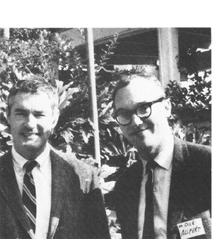

COMING DOWN
In these few years we had gotten over the feeling that one experience was going to make you enlightened forever. We saw that it wasn’t going to be that simple.
And for five years I dealt with the matter of “coming down.” The coming down matter is what led me to the next chapter of this drama. Because after six year, I realized that no matter how ingenious my experimental designs were, and how high I got, I came down.
At one point I took five people and we locked ourselves in a building for three weeks and we took 400 micrograms of LSD every four hours. That is 2400 micrograms of LSD a day, which sounds fancy, but after your first dose, you build a tolerance; there’s a refractory period. We finally were just drinking out of the bottle, because it didn’t seem to matter anymore. We’d just stay at a plateau. We were very high. What happened in those three weeks in that house, no one would ever believe, including us. And at the end of the three weeks, we walked out of the house and within a few days, we came down!
And it was a terribly frustrating experience, as if you came into the kingdom of heaven and you saw how it all was and you felt these new states of awareness, and then you got cast out again, and after 2 or 300 times of this, began to feel an extraordinary kind of depression set in—a very gentle depression that whatever I knew still wasn’t enough!
